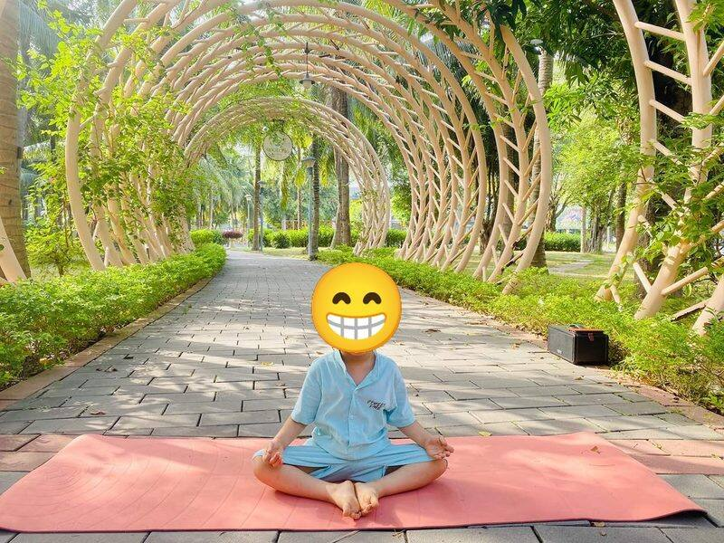
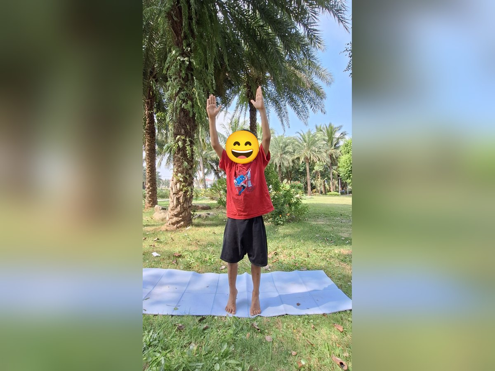
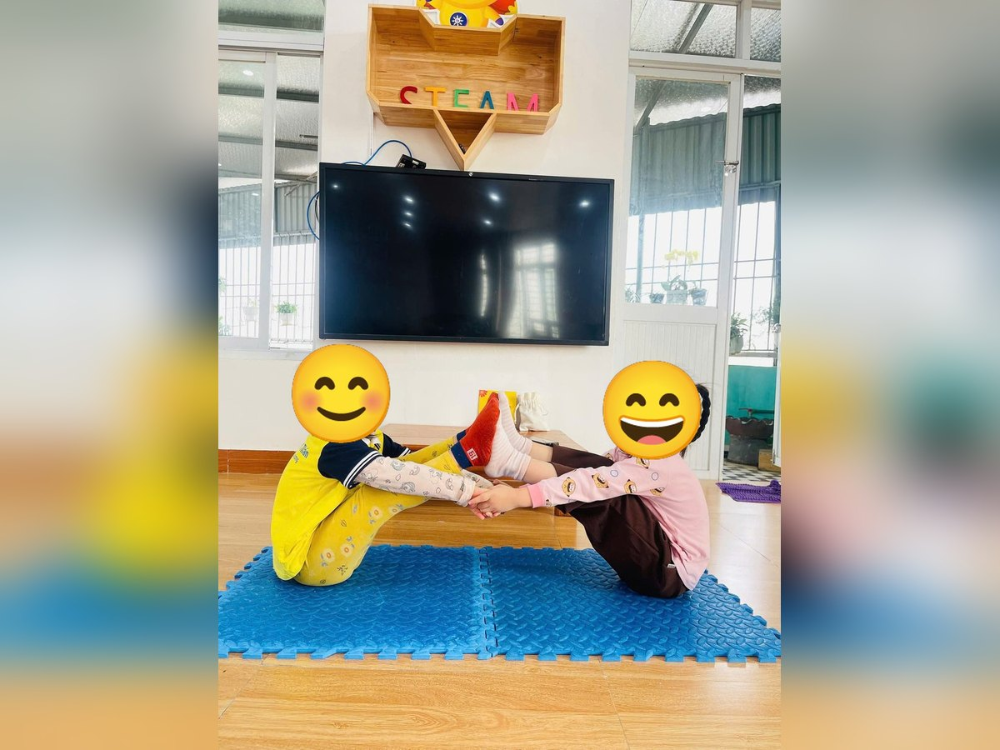
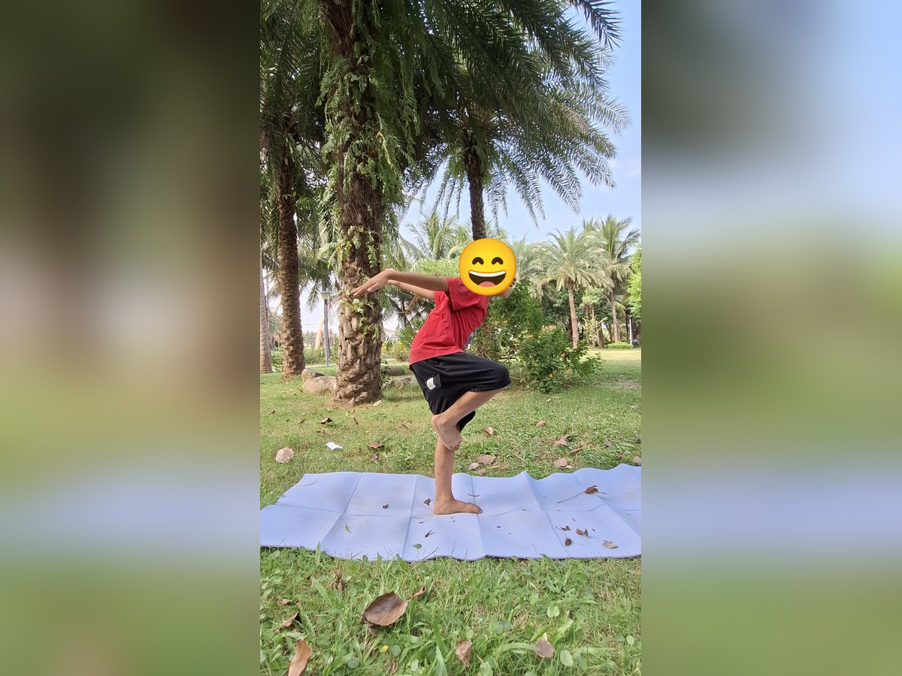
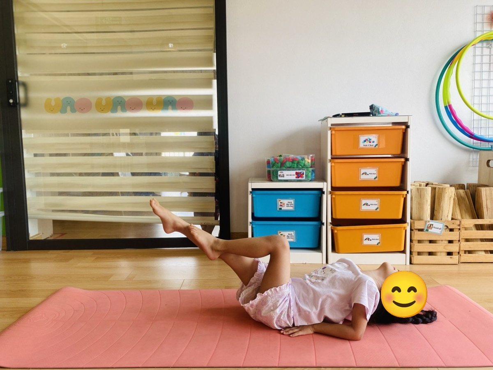
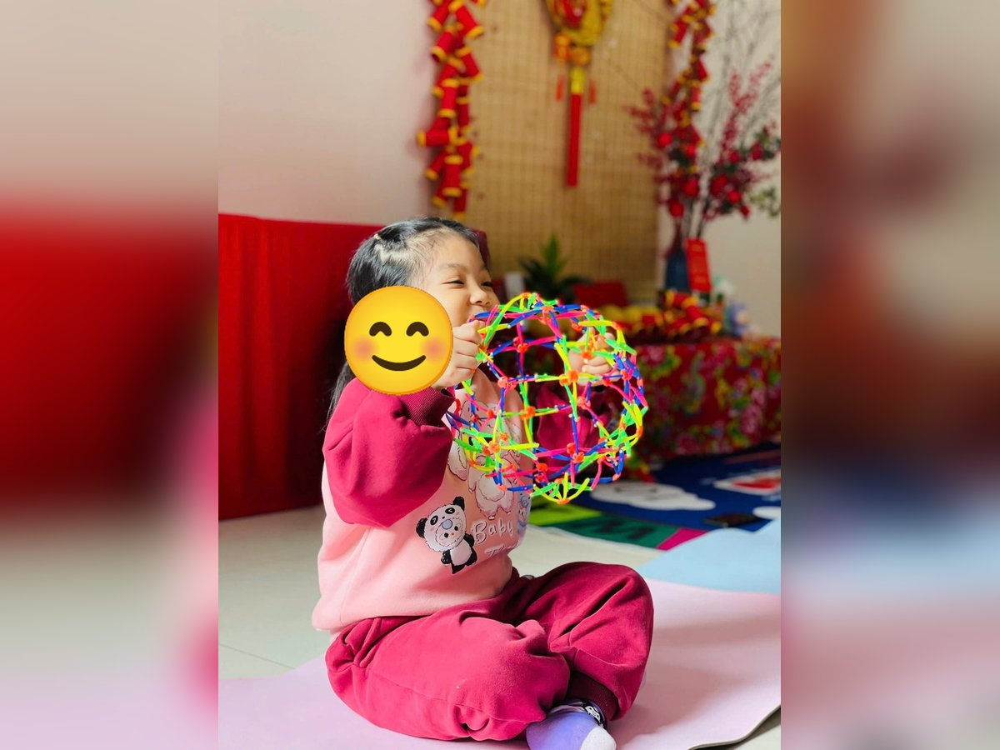

Chủ đề 11 · Bé kể chuyện Bác Hồ
Ao cá của Bác Hồ
🌟 Bài học trong câu chuyện
Giới luật yoga: Brahmacharya – Biết điều độ, vừa đủ. Bé biết lúc nào chơi, lúc nào nghỉ, ăn vừa đủ no.
Kỹ năng sống: Sống giản dị, ăn uống vừa đủ.
1. Khởi động (2 phút)
Cả lớp ngồi xếp bằng thành vòng tròn. Cùng thở 3 hơi thở bông hoa: hít vào bằng mũi như ngửi hoa, thở ra bằng miệng thật chậm. Chắp tay trước ngực và chào nhau: “Namaste, chào các bạn!”
2. Câu chuyện: Ao cá của Bác Hồ (đọc cho bé nghe, 4 phút)
Cô đọc trọn câu chuyện cho bé nghe trước. Sau đó cô kể lại từng đoạn ngắn và cả lớp cùng tập 10 tư thế ở phần bên dưới.
Ngày 19 tháng 5 là ngày sinh của Bác Hồ. Cô giáo kể cho các con nghe về quê Bác ở làng Sen. Ở đó có đầm sen thơm ngát, có cây đa to đầu làng và hàng tre xanh đung đưa trong gió.
Ngày xưa, khi đất nước còn khó khăn, Bác đi tàu thủy rất xa, qua nhiều biển lớn, để tìm cách giúp đất nước mình. Sau này trở về, Bác sống trong một ngôi nhà sàn nhỏ bằng gỗ, giản dị và gọn gàng.
Bên nhà sàn có một ao cá. Mỗi sáng, Bác ra cho cá ăn. Bác cho vừa đủ, không cho quá nhiều. Bác bảo: "Cho cá ăn nhiều quá, cá sẽ bị đau bụng". Bác cũng ăn uống đơn giản, ăn vừa đủ no, không bỏ phí hạt cơm nào.
Bác thích nghe chim hót mỗi sáng, thích ngắm hoa, ngồi thở thật chậm giữa thiên nhiên. Bác từng sống giữa núi rừng Việt Bắc, nơi có những ngọn núi cao trùng điệp.
Bác rất yêu các cháu thiếu nhi. Bác dặn các cháu ngoan ngoãn, học giỏi. Các con hãy làm cháu ngoan Bác Hồ: ăn vừa đủ, sống gọn gàng, giản dị như Bác nhé.
3. Kể lại và tập 10 tư thế (6 phút)
-

1Hoa sen
🧘 Tư thế Hoa sen (Lotus)
Lời kể khi tập: Quê Bác có đầm sen thơm ngát. Mình làm bông sen nở thật đẹp.
Cách làm: Ngồi xếp bằng, lưng thẳng, hai tay đặt trên gối, ngón cái chạm ngón trỏ như búp sen, thở thật chậm. Giữ 3 đến 5 nhịp thở.
-
 2
2Cây đa
🧘 Tư thế Cái cây (Tree)
Lời kể khi tập: Ở làng quê Bác có cây đa to. Mình đứng một chân làm cây đa.
Cách làm: Đứng một chân, bàn chân kia đặt vào bắp chân hoặc đùi (không đặt lên đầu gối), hai tay chắp trên đầu. Giữ 3 đến 5 nhịp thở.
-

3Cây tre
🧘 Tư thế Vươn tay lên cao (Upward Salute)
Lời kể khi tập: Hàng tre xanh đung đưa trong gió. Mình vươn tay cao, đung đưa nhẹ.
Cách làm: Đứng thẳng, hai tay vươn cao qua đầu, mắt nhìn lên, có thể kiễng nhẹ. Giữ 3 đến 5 nhịp thở.
-

4Con tàu ra khơi
🧘 Tư thế Con thuyền (Boat)
Lời kể khi tập: Ngày xưa Bác đi tàu rất xa để tìm cách giúp đất nước. Mình làm con thuyền, giữ thăng bằng nào!
Cách làm: Ngồi, co gối, ngả người ra sau một chút, nhấc hai chân lên, tay duỗi ra trước. Làm đôi như trong ảnh: hai bạn ngồi đối diện, áp bàn chân vào nhau, nắm tay nhau, cùng nhấc chân lên. Giữ 3 đến 5 nhịp thở.
-

5Chim hót trên cành
🧘 Tư thế Hồng hạc (Flamingo)
Lời kể khi tập: Bác thích nghe chim hót mỗi sáng. Mình đứng một chân như chú chim.
Cách làm: Đứng một chân, co chân kia lên, hai tay dang như cánh chim. Giữ 3 đến 5 nhịp thở.
-

6Ao cá Bác Hồ
🧘 Tư thế Con cá (Fish)
Lời kể khi tập: Bác cho cá ăn mỗi ngày, cho vừa đủ, không cho quá nhiều để cá khỏe mạnh.
Cách làm: Nằm ngửa, hai tay đặt dưới mông, ưỡn ngực lên, đỉnh đầu ngả ra sau chạm thảm; bé lớn có thể nhấc hai chân lên khỏi thảm như đuôi cá. Giữ 3 đến 5 nhịp thở.
-
 7
7Nhà sàn
🧘 Tư thế Cái bàn (Table Top)
Lời kể khi tập: Bác sống trong ngôi nhà sàn nhỏ, giản dị, gọn gàng. Mình làm nhà sàn, lưng phẳng.
Cách làm: Chống hai tay dưới vai, hai gối dưới hông, lưng phẳng như mặt bàn. Giữ 3 đến 5 nhịp thở.
-
 8
8Cháu ngoan Bác Hồ
🧘 Tư thế Em bé (Child's Pose)
Lời kể khi tập: Bác ăn uống đơn giản, vừa đủ no, không bỏ phí. Mình cúi người như bé ngoan.
Cách làm: Quỳ gối, ngồi lên gót chân, cúi người cho trán chạm thảm, hai tay duỗi ra trước hoặc để xuôi bên người. Giữ 3 đến 5 nhịp thở.
-
 9
9Núi rừng Việt Bắc
🧘 Tư thế Tam giác (Triangle)
Lời kể khi tập: Bác từng sống giữa núi rừng. Mình làm ngọn núi tam giác.
Cách làm: Dang rộng hai chân, một tay chạm ống chân, tay kia vươn thẳng lên trời. Đổi bên. Giữ 3 đến 5 nhịp thở.
-

10Thở bông hoa
🧘 Tư thế Thở quả cầu (Breathing Ball)
Lời kể khi tập: Mình ngồi thở như Bác ngắm hoa: hít vào quả cầu to ra như hoa nở, thở ra quả cầu nhỏ lại.
Cách làm: Ngồi xếp bằng, hai tay cầm quả cầu thở (hoặc chụm tay thành quả cầu). Hít vào kéo quả cầu to ra, thở ra thu quả cầu nhỏ lại, thật chậm. Giữ 3 đến 5 nhịp thở.
4. Thư giãn (2 phút)
Các con nằm ngửa, tay chân thả lỏng, nhắm mắt lại. Cô nói nhẹ: “Hít vào thật chậm… thở ra thật chậm… Con nhớ lại câu chuyện vừa rồi, nhớ người bạn mình thích nhất trong truyện. Cơ thể con mềm như bông, nhẹ như mây.” Sau đó các con nghiêng người, từ từ ngồi dậy.
5. Trò chuyện cùng bé (1 phút)
Bác Hồ sống giản dị, ăn vừa đủ, cho cá ăn vừa đủ. Biết điều độ, vừa đủ là Brahmacharya.
Cô hỏi các con:
- Con ăn cơm thế nào để không bỏ phí?
- Bác Hồ cho cá ăn thế nào?
Kết thúc bằng lời chào “Namaste” và một nụ cười.
Lưu ý cho thầy cô và bố mẹ: Tập trên thảm, không tập ngay sau khi ăn no. Bé chỉ làm tới mức thấy dễ chịu, không ép bé. Tư thế đứng một chân có thể cho bé vịn tường hoặc vịn tay người lớn.